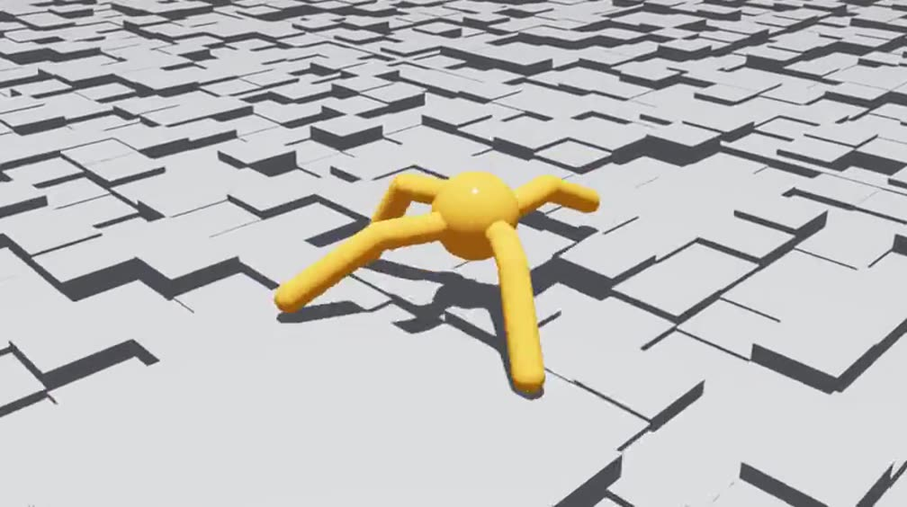
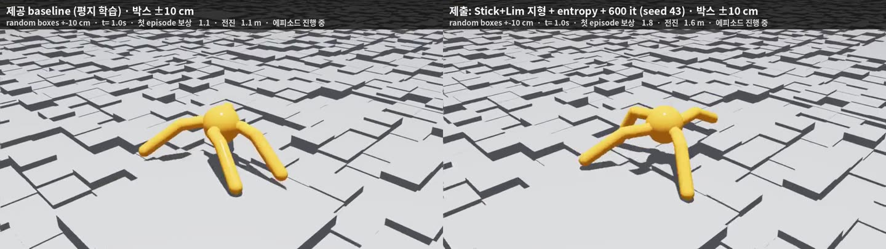
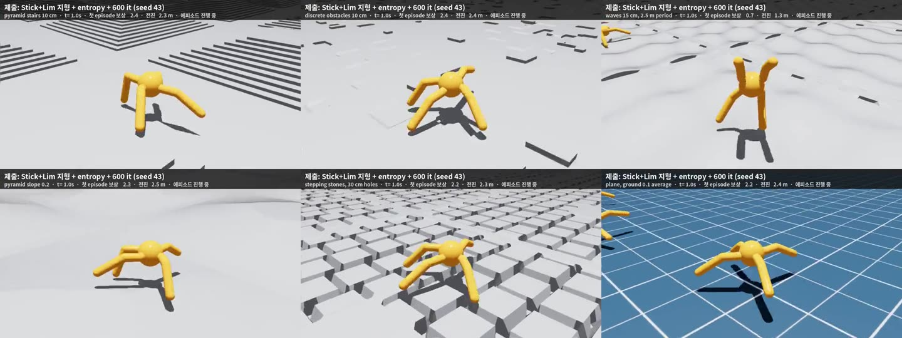

처음 학습
24가지 조합을
각각 세 번 학습했습니다.
환경 4,096개, 32 step
1,000 iteration
개를 새로 학습했습니다.
로봇 시뮬레이션 실습 과제 1
팀원 방법을 비교하고 조합했습니다.

2026. 10. 08.
문제
제공 모델은 평지에서 잘 걸었지만 박스 지형에서는 자주 넘어졌습니다.
평지
첫 episode 누적 보상
박스 높이 −10~10 cm
첫 episode 누적 보상
Week03 강의 자료 p.39에서도 평지 131.9, 새로운 지형 6.5였습니다.
평가 조건이 달라 위 측정값과 직접 비교하지 않았습니다.
처음 보는 지형에서도 걸을 수 있도록 학습 방법을 바꿨습니다.
비교 대상
모든 실험에서 발밑 지면 기준으로 몸통 높이를 관측했습니다.
| 바꾼 요소 | 비교한 설정 | 참고한 방법 |
|---|---|---|
| 학습 지형 | 평지, Stick, Lim, 둘의 혼합, 이전 험지 세트(장애물, 계단, 급경사), 전체 혼합 | 팀원 지형과 이전 실험 |
| entropy | 계수 0과 0.005를 비교했습니다. | Lim 팀원 |
| 랜덤화 | 마찰, 질량, 자세, 외력 등을 바꿨습니다. | 이전 제출 모델 |
| 추가 학습 | 원래 보상과 회복 보상으로 더 학습했습니다. | Lim 팀원과 Stick 팀원 |
높이 관측만 바꿨을 때의 효과는 따로 비교하지 않았습니다.
제공 코드와 제출 모델 비교
| 항목 | 기본 코드 | 제출 모델 |
|---|---|---|
| 학습 지형 | 평평한 바닥terrain_type="plane" | 지형 생성기 험지: 작은 요철, 물결, 완만한 경사(Stick 팀원)와 높이가 다른 블록(Lim 팀원)을 반씩 |
| 몸통 높이 관측 | 몸통의 월드 z 좌표base_pos_z | 몸통 아래 바닥까지 거리 (아래로 쏜 광선 1개) |
| 넘어짐 판정 | 몸통 z 0.31 m 미만 | 바닥에서 몸통까지 0.31 m 미만 |
| PPO entropy 계수 | 0.0 | 0.005 |
| 학습량 | 1,000 iteration | 1,000 iteration 후 같은 가중치로 600 iteration 더 |
보상 7가지, 행동, 신경망, 다른 PPO 설정, 환경 수, 에피소드 길이는 기본 코드 그대로입니다.
실험 설계
비교할 요소를 빼고 나머지 PPO 설정과 학습량을 맞췄습니다.
처음 학습
환경 4,096개, 32 step
1,000 iteration
개를 새로 학습했습니다.
추가 학습
원래 보상과 회복 보상을
각각 적용했습니다.
개를 이어 학습했습니다.
모델 선택
기준 모델도 같은 규칙으로
비교했습니다.
개 모델을 평가했습니다.
다시 평가
처음 선택에 쓰지 않은
지형 모양으로 바꿨습니다.
지형과 선택 규칙은 결과를 보기 전에 정했습니다.
새 학습은 총 84개였습니다. 기존 두 조합의 학습 결과도 포함했고, 추가 학습은 학습량이 더 많았습니다.
평가 기준
각 조건에서 환경 100개의 보상을 평균한 뒤, 28개 조건을 다시 평균했습니다.
조건마다 같은 비중으로 계산했습니다. 수업에서 실제로 채점할 지형은 공개되지 않았습니다.
처음 정한 지형에서 평가한 점수
새 조합 상위 8개와 기준 모델입니다. E는 entropy 0.005, D는 랜덤화입니다.
점수가 오른 세 가지 변경
평지 대신 울퉁불퉁한 바닥에서 걷기를 연습시켰습니다.
Stick 험지와 Lim 박스를 반반 섞었습니다. Stick은 무작위 요철(−5~5 cm, 50%), 물결(5~15 cm, 30%), 완경사 오르막과 내리막(각 10%)이었습니다. Lim은 0.45 m 블록, 높이 −10~10 cm였습니다.
몸통 높이는 월드 z 대신 아래 방향 ray 1개로 잰 발밑 지면까지 거리로 관측했습니다. 넘어짐도 같은 기준 0.31 m로 판단했고, 평지에서는 두 높이가 같았습니다.
행동을 너무 일찍 한 가지로 굳히지 않도록 무작위성, 즉 탐색을 유지하는 보너스를 줬습니다.
Lim 팀원처럼 PPO 손실의 entropy 계수를 0에서 0.005로 바꿨고, 나머지 PPO 설정은 그대로 뒀습니다.
배운 정책을 같은 조건에서 더 오래 연습시켰습니다. 1,000 iteration의 가중치를 불러와 원래 보상으로 600 iteration 더 학습했고, optimizer는 새로 시작했습니다.
1 iteration은 환경 4,096개에서 32 step의 경험을 모아 한 번 업데이트하는 단위였습니다.
랜덤화(마찰, 질량, 외력, 관측 노이즈), 회복 보상(넘어짐, 기울기 감점), 이전 험지 세트(장애물, 계단, 급경사 등 9종)은 이 조합의 점수를 높이지 못했습니다.
같은 학습 세 번의 평균
험지 학습에는 발밑 지면 기준의 높이 관측도 포함했습니다. entropy의 증가 폭이 점으로 가장 컸습니다.
같은 조건에서 한 가지씩 변경
같은 지점에서 다른 방법을 적용했지만 점수는 낮아졌습니다.
| 바꾼 방법과 비교 기준 | 점수 | 변화 | 학습 세 번의 결과 |
|---|
회복 보상은 넘어짐률을 로 낮췄지만, 점수도 낮아졌습니다.
다른 지형과 실행 방법으로 재평가
수업 스크립트 출력, 제출 모델의 박스 지형 평균
환경 100개의 표준편차
28조건 평균과는 다른 값입니다.
순위는 같았습니다. 다만 피라미드 계단 2조건은 실행 방법에 따라 값이 달라졌고 원인은 확인하지 못했습니다.
높이 −10~10 cm 박스
제공 모델 3.6초, 보상 4.3
제출 모델 16초, 보상 61.3

제공 모델은 넘어졌고, 제출 모델은 16초를 완주했습니다.
다른 지형 영상

1.9초에 넘어졌습니다.
이 조건에서 환경 100개의 넘어짐률은 32%였습니다.
94 m, 145 m
제출 모델이 제공 모델보다 느렸습니다.
평지 전용 정책보다 약했습니다.
험지 점수는 올랐지만, 모든 지형에서 좋아진 것은 아니었습니다.
마무리
Stick과 Lim의 지형, entropy 0.005, 원래 보상으로 600 it 추가 학습을 선택했습니다.
점수는 점이었고, F3a와 같은 수준이거나 조금 높았습니다.
같은 학습량으로 방법을 비교하고, 새 지형에서 다시 확인했습니다.
이전 제출 모델의 랜덤화는 평지와 저마찰에는 도움이 됐지만 최종 조합에서는 제외했습니다.
평지 속도, 미끄러운 지면, 경사에서의 넘어짐은 해결하지 못했습니다.
부록 A
랜덤화는 평지와 저마찰에서 점이었습니다.
원래 보상으로 추가 학습
세 조합 모두 점수가 올랐습니다.
회복 보상과 원래 보상의 차이
넘어짐률은 로 줄었습니다.
랜덤화는 일부 조건에만 도움이 됐습니다.
부록 B
같은 범주에 속한 조건의 점수를 평균했습니다.
선택한 조합은 험지에서 높았고, 평지와 저마찰에서는 기존 모델보다 낮았습니다.
숫자가 높을수록 보상이 높았습니다. 전체 점수는 각 범주의 조건 수만큼 반영했습니다.
부록 C
선택한 조합을 세 번 학습한 reward 기록입니다.
1,000 it의 가중치로 원래 보상을 써서 600 it 더 학습했습니다.
25 it 간격과 단계의 마지막 기록을 표시했습니다. 학습 reward는 앞의 평가 점수와 달랐습니다.
부록 D
첫 episode 누적 보상(return)은 처음 넘어지거나 16초(960 step)가 될 때까지 받은 보상의 합입니다. 전진, 생존, 직립, 목표 이동 보상과 행동 크기, 에너지, 관절 한계 감점의 7항을 썼습니다.
데모 점수는 환경 100개의 첫 episode return 평균을 28개 지형과 마찰 조건에서 구한 뒤, 다시 평균한 값입니다.
넘어짐률은 발밑 지면 기준 몸통 높이가 0.31 m보다 낮아져 episode가 끝난 비율입니다.
학습 seed 42, 43, 44는 난수 시작값만 바꾼 세 번의 학습입니다. 평가 seed 24는 시작 상태를 고정했고, 지형 seed 2028과 2029는 지형 모양을 정했습니다. 2029는 선택에 쓰지 않은 새 지형입니다.
짝 비교는 한 요소만 다른 두 조합을 같은 학습 seed끼리 비교한 것입니다. 세 번 모두 올랐다는 말은 세 seed에서 각각 점수가 올랐다는 뜻입니다.
랜덤화(Robust42)는 마찰 0.45~1.35, 몸통 질량 ×0.8~1.2, 무게중심, 시작 자세, 관측 노이즈를 바꿨습니다. 학습 중 4~8초마다 밀기도 적용했습니다.
회복 보상(Stick)은 넘어짐 −10, 낮거나 기울어진 몸통, 급한 행동 변화와 흔들림에 감점을 더했습니다. 속도 보상에는 상한을 뒀고, 평가 점수는 원래 보상으로 계산했습니다.
공식 방식은 수업의 play_one_episode.py처럼 모델마다 새 프로세스로 평가한 방법입니다.